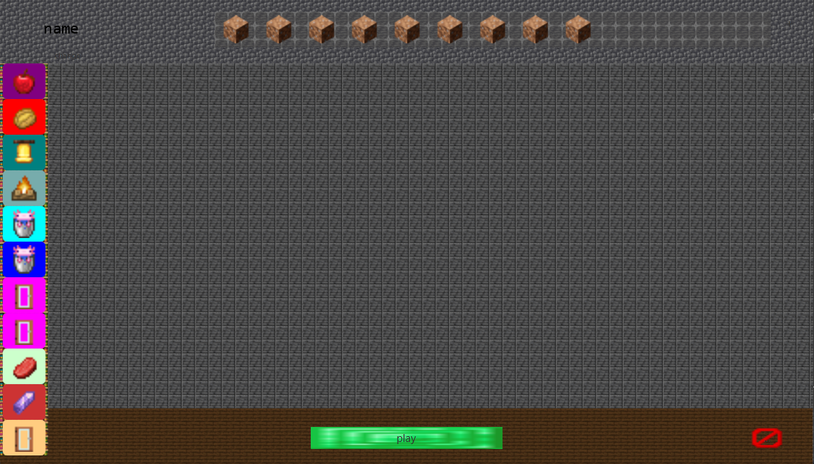
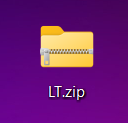
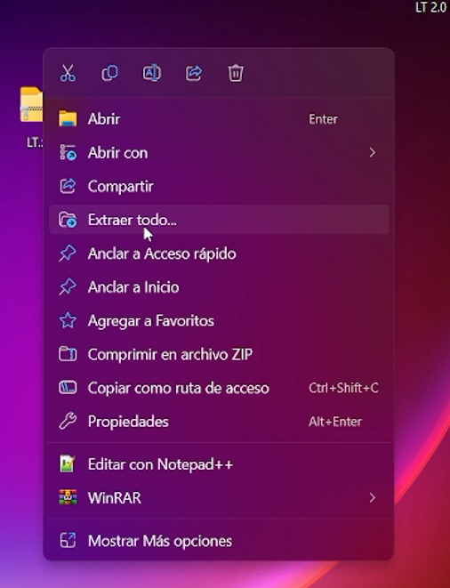
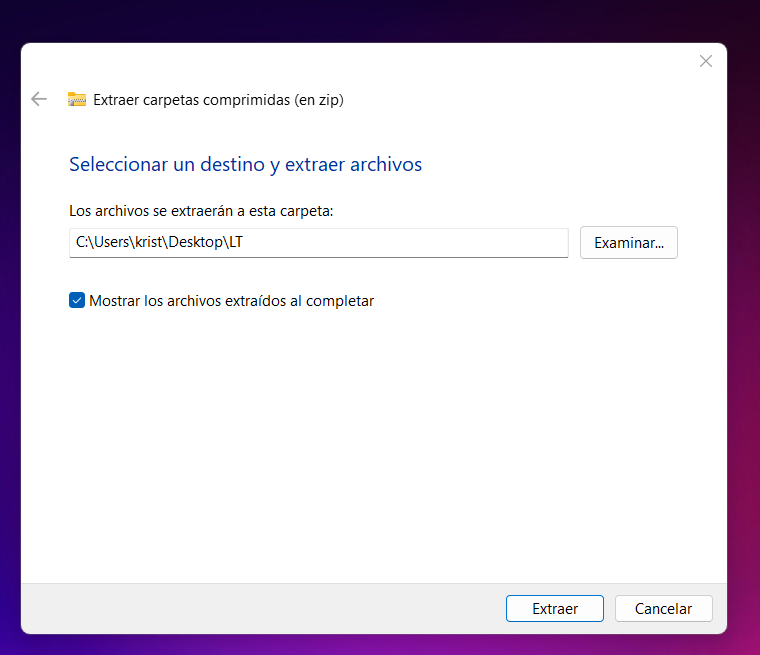
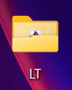

new beta 2.0
aqui podras provar la nueva beta de LT 2.0 esta beta trae las nuevas cosas que vamos a ver. lista de cosas que añadimos:
- Una mejora extraordinaria en la intezaz:
- nuevas tabs:
esta actualizacion se basa en la interzaz aunque tembien tiene varias cosas utiles. la nueva interzaz es la siguiente:  sigue abiendo cosas que mejorar pero estamos orgullosos de el cambio aciendo que se puedan usar texturepacks del juego como el faitfull
estas tabs estan el la parte derecha i tienen dicerentes opciones como cargar paginas web,manejar mods, e incluso rel quickplay en el launcher, somos los primeros en incluir esta funcion en un launcher no premium.
hay mas funciones pero tendras que descubriras!!
download LT 2.0para usar este launcher es un poco mas complejo que los otros,ya que este esta en una version beta i el instalador no esta terminado tendras que ejecutarlo a la antigua,qui tenes unas intruciones con fotos para que sea mas facil el iniciar el launcher
 encuetras el archivos que se a descargado con el link  extraes el acrivo con lick derecho extraer todo  le das a extraer  abres la carpeta i le das dos cliks seguidos a el archivo execute.bat